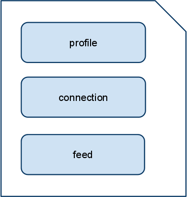
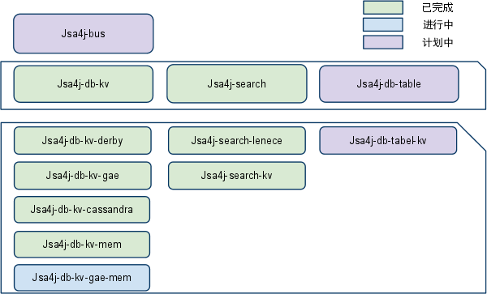

如图上图。这个模块可以理解为Web抽取之后形成的带有语义的数据池。

如图一个社交网站由3部分组成：
-
profile
-
connection
-
feed
profile中，一般会有如下信息：
* 个人主页
* 用户名，一般可读
* id,一般不可读
* Emails
* 头像链接s
* 基本信息(真实姓名,生日,性别,地点....)
需要有一个功能，就是根据URL推算出web服务商
connection中一般有：
* Followed的人到站内链接s
* Follow人的站内和站外链接s
* 朋友的站内链接s
* 自己的站外链接s
其中Follow和朋友之间的不同点就是follow不需要别人同意，而friend必须被同意，同时friend必然是双向的
feed中包括
信息源地址
需要对信息源进行保存并且有全文索引的功能，但取用是只要地址就可以了
Feed引擎：
能提供Feed聚合业务,类似friendfeed。
模块介绍
Weaving-Web
Weaving的Web前端，符合Restful的设计，有两个实现，一个是本地使用Derby为数据库。一个 在GAE使用BigTable为数据库。使用技术为Spring mvc+velocity。
页面列表
-
/ 主页
-
/search 搜索页面
-
/about 介绍页面
-
/api api介绍页面
-
/api/extract 抽取API
-
/api/dig 挖掘API
Weaving-API
Weaving的核心API，对外提供服务，有两个主要接口。可以提供给其他用户使用。
您可以在
http://weaving-gae.appspot.com/api访问。
Extract API
介绍
根据一个URL，挖出其相应的WebSite信息。该WebSite信息是结构化的。
参数
http://weaving-gae.appspot.com/api/extract？q={url}
示例
分 析http://www.google.com/profiles/KaiYanNju
返回
JSON数据。数据模型为
-
profile
-
id
-
host
-
url
-
username
-
avatarLinks
-
emails
-
personInfomations
-
connection
-
followedLinks
-
followLinks
-
friendLinks
-
selfLinks
-
feed
其中复数为字符串数组。
Dig API
介绍
根据用户名，Email或者url，挖出其相应的Person信息。该Person由若干website聚合而 成
参数
http://weaving-gae.appspot.com/api/dig？q={username,email or url}
示例
挖 掘http://www.google.com/profiles/KaiYanNju
返回
JSON数据。数据模型为
-
profile
-
id
-
host
-
url
-
username
-
avatarLinks
-
emails
-
personInfomations
-
connection
-
followedLinks
-
followLinks
-
friendLinks
-
selfLinks
-
feed
其中复数为数组。
Weaving-person-digger
从语义网挖掘出人的核心模块
挑战
•语义网本身不准确。有假信息和信息不足。从不准确和不完整的信息源中，挖掘出相当可靠的信息是很困难的。
•语义网太大，分析困难
解决办法
•信息分级。将信息利用可靠性分级。有的信息天生很准确，如Email。有的网站被解析的很准确，而有的不准。
•从语义网提取出局部进行运算。先利用索引和推理，选出候选网站，减小问题域，再进行运算。
•Agent(滚雪球的判别机器人) 。利用Agent技术，时间监视“人”单位，以助于发现新的关联或者剔除旧的关系。
计划中
利用机器学习来处理分级的问题。
Weaving-website-extracer
从 互联网抽取出语义网的核心模块
挑战
•各大网站各不相同。页面千奇百怪。
•独立博客
•访问权限
解决办法
•社交网站结构归纳，模型的确立
•脚本引擎。三行搞定一类网站。
示 例代码
•动态策略选择
•使用现有API(如Facebook Graph API)
设计
使用Filter-Pipe结构。
将线索逐渐经过Filer而丰富，同时管理策略，决定下一个Filer和什么时候结束。
利用Groovy脚本实现的Filter实例。极大的方便的一个Filter的建立。
示例Filter:
通过判别Filter中的Link模式和Link是同站还是异站带，推测这个Link的语义
直接通过语义网标准来确定Link的语义
专门为Google定制的Filter，只对Google有效。
weaving-repository
提 供信息存储，索引，搜索服务。使用Jsa4j为底层
由于Jsa4j已经封装了复杂的底层，这个模块基本用于OR Mapping。
weaving-eye
网页获取，存储，索引。可以翻墙
翻墙功能需要使用代理。
子项目
JSA4j
jsa4j是Jerrymouse Storage API for Java的简称。是JerryMouse小组开发的通用数据 底层，可以架设在单机或者Gae环境之下。脱胎于CommonCloud项目，由于CommonCloud过 于复杂，缺乏可用性。所以开发了他的简化版Jsa4J。Jsa4J的目标是可用和简洁。
Jsa4J给技术力量薄弱的团队，提供使用 Nosql数据库的可能性。可以用Jsa4j-db-kv-derby开发，运行在sa4j-db-kv-gae上。也简化了数据库的开发。
地址http://code.google.com/p/jsa4j/。

Jsa4j子项目列表
Jsa4j-db-kv 提供 KeyValue
数据库接口。有一个Derby和一个Gae实现。还有用于缓存的支持
Jsa4j-vfs 提供虚拟文件系统支持。
Jsa4j-db-table 表结构的数据库支持
Jsa4j-search 提供全文搜索支持。
Jsa4j-bus 建立在分布式缓存上的通讯总线
Jsa4j-db-kv
简介
随着NoSql运动，新奇的数据库层出不穷，提供 了各种丰富的接口。这些接口丰富在两个方面：
Jsa4j- db-kv没有“事务处理”和“数据结构”的概念，极大的方便了数据库开发。
关于事务
不管是 ACID还是BASE，都是事务处理方式。Jsa4j-db-kv没有事务的概念，默认大于配置， 认为存操作需要事务，取操作不需要。认为数据库写入永远是成功的。具体是不是真的能成功，应该由另一套系统来管理。
对于比较可靠的列存数据库，和不怎么可靠的类似Cache的数据库都有支持。
关于数据结构
数据结构方面有关系性 数据库，列存(BigTable like),文档数据库，图数据库和Key Value之分。其中Key Value是最简单的，可以由其他类型的数据库实现。同时提供一个索引工具和搜索工具，满足在数据索引上的需要。
接口
Jsa4j-db-kv只是一个KV数据库接口。
接口本身非常简洁：只有两个方法：
String get(String key)
String put(String key, String value)
详细
get
String get(String key) 取操作
参数：key - 键 返回：值，理论上是一个json对象。当然看你存入的是什么了
put
String put(String key, String value) 存操作。
-
如果Key为null,value也为null,则不操作
-
如果key为null,value不为null,不操作而不是执行insert操作
-
如果key不为null,且在数据库中存在对应的value, value也为null，执行delete操作
-
如果key不为null,且在数据库中存在对应的value, value不为null，执行update操作
-
如果key不为null,但在数据库中不存在对应的value,,value为null,则不操作
-
如果key不为null,但在数据库中不存在对应的value,,value不为null,执行inerst操作
注意点：DB提供的是数据库的底层操作。不提供主键生成机制。
参数：key - 如果是insert操作，key中必须含有类型信息，否则结果不可预知value - 一个JSON对象，也可以是别的 返回：刚刚操作的那个对象的key
满足这个接口开发，就可以使系统有很好的可迁移性。
GetFavicon
网址：
http://favicongetter.appspot.com/
-
可以通过域名来获得一个网站的图标，简单实用。
-
基于Google CDN。可以获得良好的速度。
-
附带一个基于CSS3的图标编辑器。提供API服务。